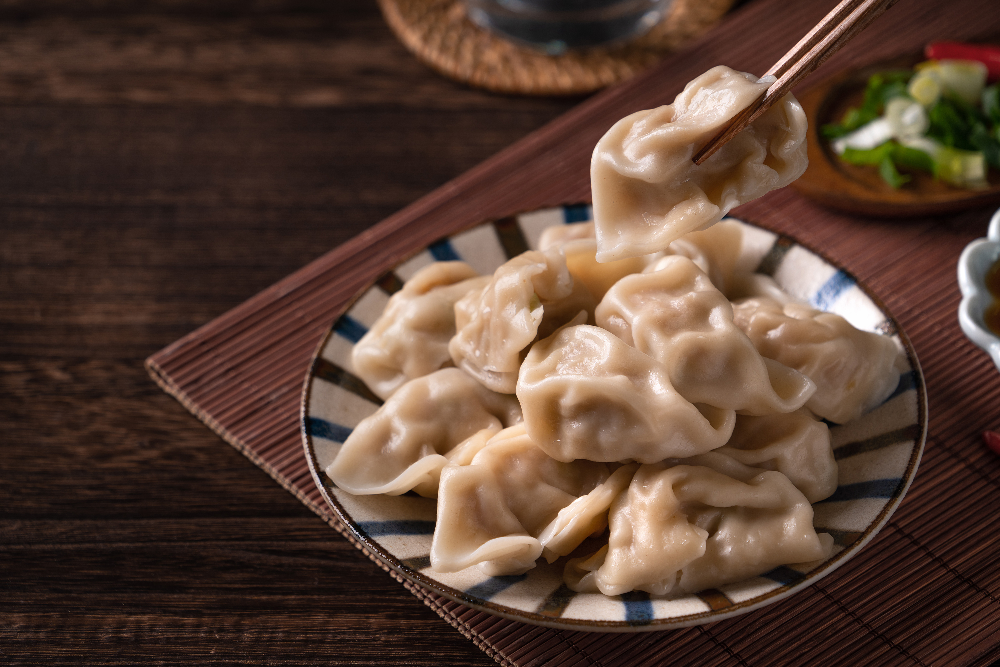

Shuǐjiǎo are Chinese dumplings served without broth or soup, filled with various ingredients that are limited only by one's imagination. The boiled dumplings are a staple food of northern China. Some of the most popular ingredients for the filling include shrimp, cucumber, purple cabbage, ground pork, bean sprouts, vermicelli, and rice. Shuǐjiǎo are especially popular during the Lunar New Year, when whole families in northern China prepare them, with some family members rolling out the dumplings, some mixing the ingredients for the filling, and some pinching them into crescent-like shapes.
Meal prep time : 3 hours 10 minutes
Servings : 8